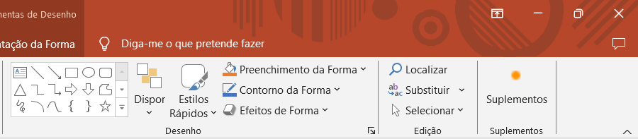
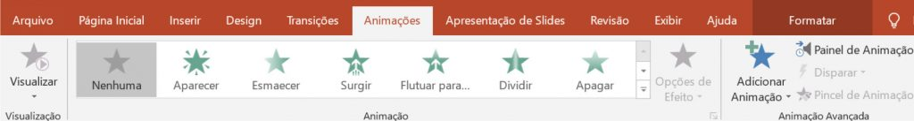

Abrir o PowerPoint através do menu iniciar

Esta é a página inicial do PowerPoint

Criar uma Apresentação:
Aqui podemos escolher entre varios templates ou uma apresentação em branco.
Salvar uma Apresentação:
Ao clicar em Browse (Explorar) podemos selecionar um local expecifico, como uma pasta, onde queremos guardar a nossa apresentação.
Abrir uma Apresentação:

Ao clicar em Browse (Explorar) podemos selecionar um local expecifico, como uma pasta, onde está guardada a nossa apresentação.
Por fim temos um slide em branco do PowerPoint
Este é menu Base

Semelhante ao Word, aqui podemos encontrar as funções de mudar o tipo de letra e o tamanho.
Também é possível colocar o texto em Negrito (N), Itálico (I), Sublinhado, Rasurado e com sombreado.
Aqui encontramos a função para adicionar um novo slide

Aqui é possível colocar marcadores ou numeração no inicio de um paragrafo.
Neste sitio também temos as funções de Alinhar à esquerda, Centralizar, Alinhar à direita, Justificar e adicionar Colunas.
Assim como mudar o Espaçamento entre as linhas.
Este é o menu Inserir


Nesta aba podemos adicionar uma tabela do tamanho desejado ou importar uma tabela Exel.

Nesta secção podemos adicionar imagens salvas no dispositivo.
Assim como adicionar formas, icons e gráficos.

Nesta secção podemos adicionar caixa de texto, cabeçalho e rodapé, WordArt (estilos de letra), número de slide e equações e simbolos.

Aqui pode ser importado um vídeo ou um audio.
Este é o menu Layout (Estrutura)

Neste menu encontramos uma variedade de templates predefinidos para usar nas apresentações.
Também é possivel procurar online por mais templates.
Este é o menu de Transições
 As transições são efeitos de transição entre os slides, que ajudam a suavizar a progressão da apresentação.
As transições são efeitos de transição entre os slides, que ajudam a suavizar a progressão da apresentação.

Neste menu podemos alterar a direção da transição (de baixo para cima, da esquerda para a direita, etc.).

Também é possivel adicionar sons e mudar a duração da transição.
Assim como definir um tempo antes da transição ser executada.
Este é o menu de Animações

As animações são efeitos visuais que podem ser aplicados a elementos individuais nos slides, como texto, imagens e gráficos.

Este menu contem diversas animaçãoes diferentes para deixar a apresentação mais dinâmica.

Neste menu podemos alterar a direção da animação (de baixo para cima, da esquerda para a direita, etc.).